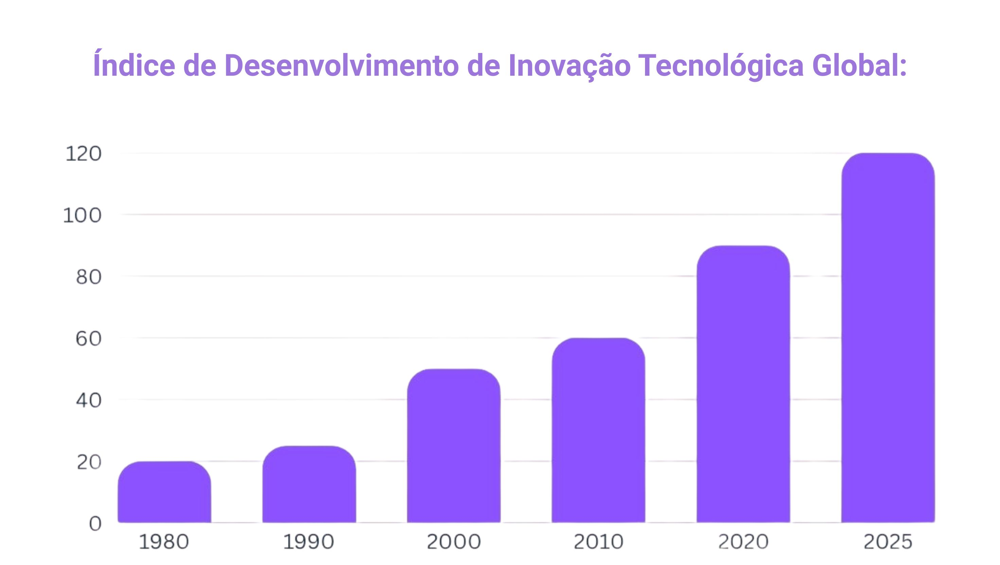

Dados Demonstram a Evolução da Economia no ramo da Inovação Tecnológica
Por Giovanni Oliveira, TecScope
A indústria tecnológica é um dos pilares mais dinâmicos da economia global contemporânea. Responsável por inovações disruptivas, transformação digital e mudanças nos modelos de negócios tradicionais, o setor tecnológico tem moldado o comportamento dos consumidores, impulsionado novas formas de trabalho e alterado a estrutura produtiva mundial. Este artigo explora a economia da indústria tecnológica, destacando seu impacto, desafios econômicos e oportunidades de crescimento.

Nas últimas décadas, empresas de tecnologia como Apple, Microsoft, Google, Amazon e Tencent tornaram-se algumas das maiores corporações do mundo em valor de mercado. A digitalização de processos, a automação industrial, o avanço da inteligência artificial e o uso massivo de dados estão entre os principais motores do crescimento do setor.
A economia digital representa atualmente cerca de 15% do PIB global, segundo estimativas do Banco Mundial, e essa porcentagem tende a crescer com o avanço da conectividade e da transformação digital em países em desenvolvimento. Além disso, a tecnologia tem impulsionado outros setores, como o financeiro (fintechs), o varejo (e-commerce), a saúde (healthtechs) e a educação (edtechs), criando novos mercados e empregos.
Além disso, governos têm investido em infraestrutura digital e políticas de incentivo à inovação, como ocorre na China com o plano “Made in China 2025” ou com o investimento dos Estados Unidos em chips e semicondutores. A inovação contínua é vital para a competitividade do setor, pois o ciclo de vida dos produtos tecnológicos é curto e altamente dependente de avanços em pesquisa e desenvolvimento (P&D).